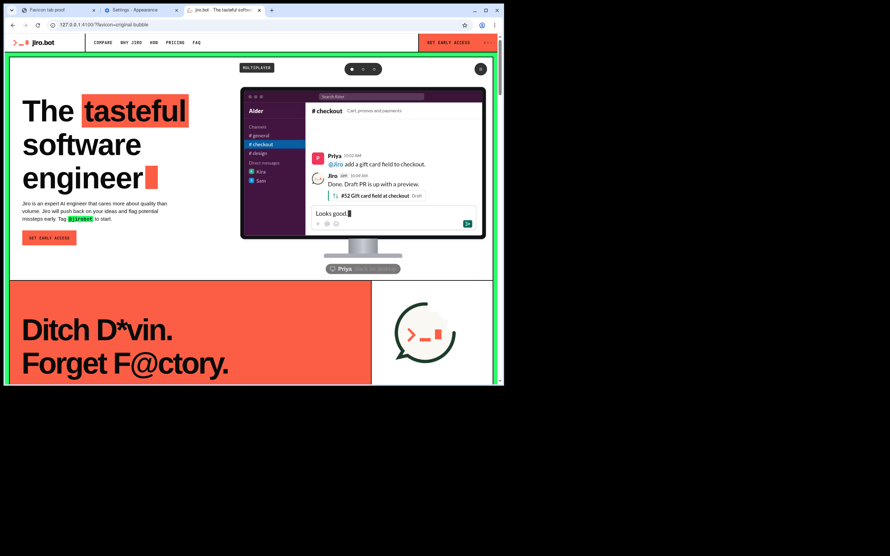
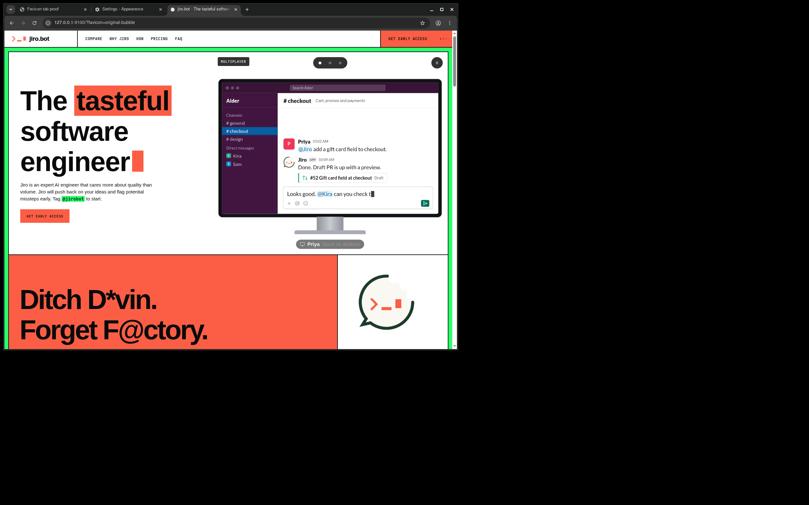

Seven installed assets match option 1 exactly. Original cream, green and orange; transparent outside the bubble. No deployment.
These are captures of the real Chrome desktop and tab strip, using Chrome’s Light and Dark appearance settings. Open the PNGs for full-resolution originals.


Pixel and alpha verification · Browser suite · Python suite · Lint · Copy-editor HTTP